(hi I'm proto)
Clean a copper board. Lightly sand it to rough up the surface. (not sure if this is necessary) Clean it again. (this is necessary)
Draw circuit on board. Try not to touch the bare copper with your greasy fingers. I clipped my boards to a piece of glass and used that to manipulate them. How I designed my circuit is beyond the scope of this, but for the record I tried manually drilling a hole in my test board with this stupid fucking thing, and it took a half hour before I gave up when I was about 80% through.
So my circuit is a sort of hybrid Manhattan/Island style layout.
Basically just a bunch of solder pads in a usable layout for my components, which I plan to connect with hookup wires. The 5v rail is the only modern-conventional "trace"
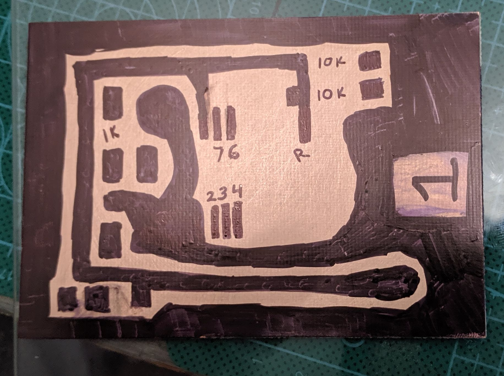
More in the next step, but I had little idea what would work, so I also prepared another board differently. Board 1 (above) is purely drawn with sharpies. On this one, which I think of as "board 0", the ground plane is painted on with nail polish and "neatened up" with sharpie. I thought this might be easier. I was mistaken.
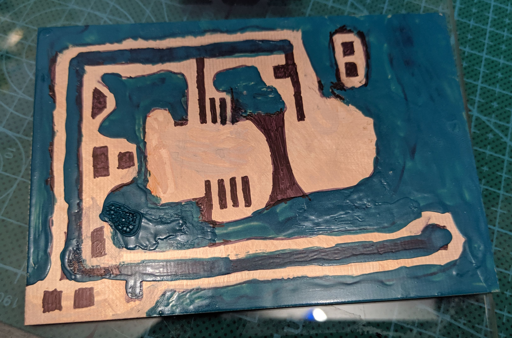
I've never done this before and my research online has turned up conflicting information (wow weird), so the first board I etched would actually be a test article:
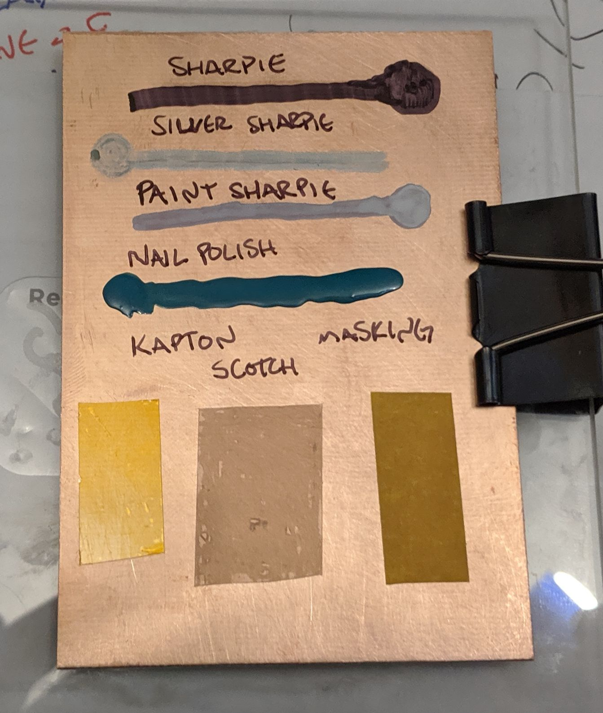
On this test board I included a line for every reasonable masking method at my disposal:
All labels were written with black ultra-fine sharpie. I also dragged my fingertip across my face and planted a nice greasy fingerprint slightly to the right of the nail polish line.
I didn't remember to take very many pictures of my setup/process. Here's a word picture:
Originally I used lukewarm garden hose water, but ferric chloride etches faster when it's warm (I think ~45C is ideal?) so midway through the process I swapped out the hose water for "hot" tap water from the kitchen sink.
I dropped the test board into the top tray and poured enough etchant to cover it.

The liquid should be steadily agitated I guess. Because of my tray sandwich setup, the top container was easy to rock like a boat. Here's me checking my status after 10-15 minutes

The etchant starts at edges and works its way inwards. My test board took an estimated 25 minutes. After I switched the water bath to hot water and moved my whole setup out of the shade, I etched both "real" boards at once and it took about 30 minutes.
It was about 80F here today, partly cloudy, with absolutely no breeze.
I don't have any photos of the immediate aftermath or the cleanup. My gloves were covered with ferric chloride and I didn't wanna touch my new phone. (all photos were taken with a google pixel 3a and I am very impressed. I rotated/cropped some stuff on my desktop but otherwise nothing is altered)
in basic form, my cleanup process was:
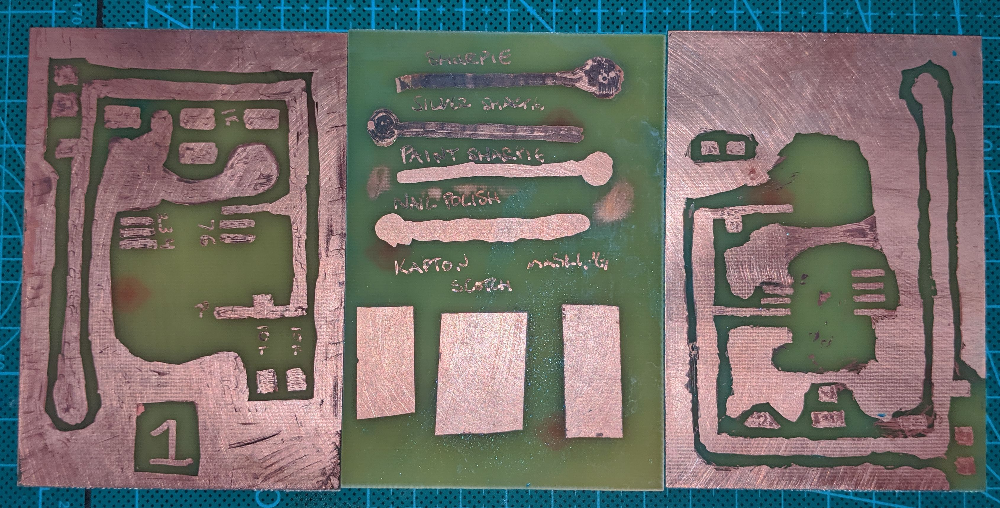
Let's go board-by-board here, starting with...
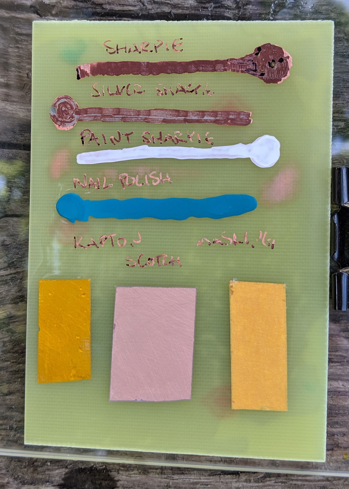
Here it is, right after rinsing. You'll notice the black and silver sharpie lines look... weird. While rinsing this one, I kinda tried to rub the sharpie off with my (in a glove) thumb. It looked pretty clean while wet, but it dried that weird off-black color and alcohol/acetone won't clean it. I suspect the copper might have been a little vulnerable and what I did was mash the dye into the metal or something ¯(°o ° )/¯
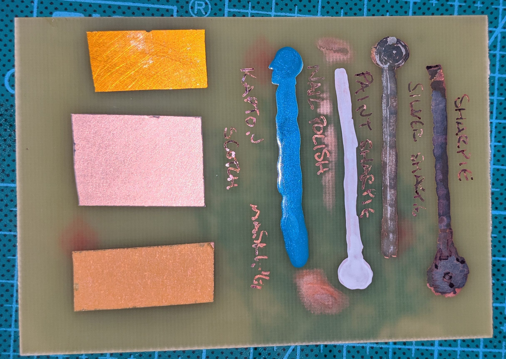
I dunked it in isopropyl. Nothing much happened, even after scrubbing it.
I then peeled the tapes off and scrubbed the board again, this time using acetone. I forgot to take a photo here, but it'd be identical to how it looks in the photo at the top of this section. Here it is with light behind it:
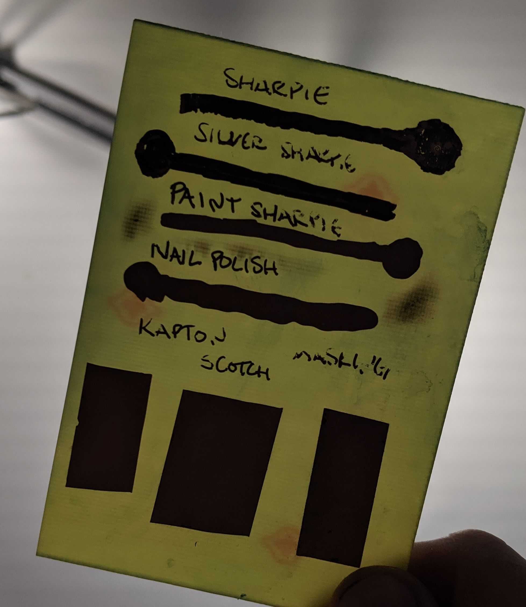
FR4 fiberglass is translucent, but the copper cladding is very opaque. Hold a board up to light and it's easy to tell that its traces are isolated.
So, my comments on this one:
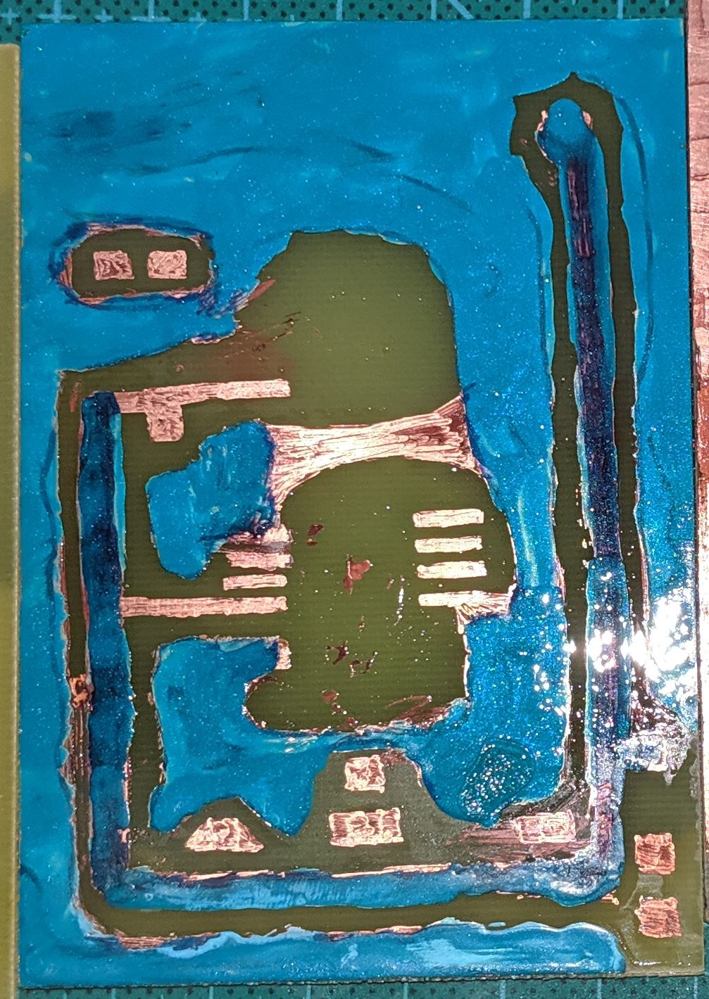
Here it is, rinsed with alcohol.
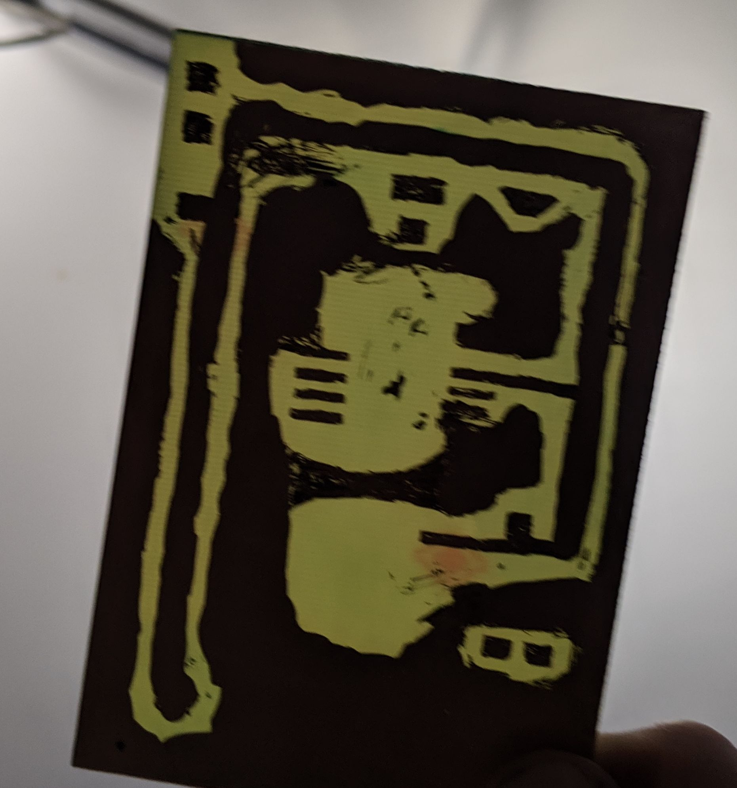
Acetone-washed and held up to the light. You'll notice that, uh, well
I'm gonna have to scrape out some material in order to use this
On the bright side, nail polish is a very effective etching mask for large areas like ground planes.
I'm never using it again.
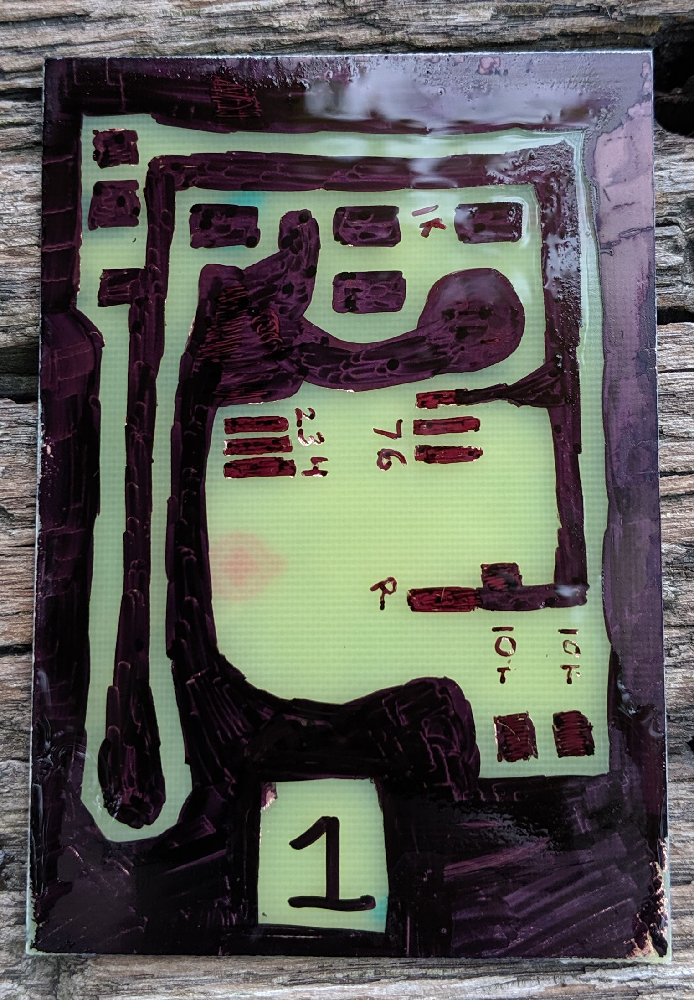
Here it is, ferric chloride freshly rinsed off.
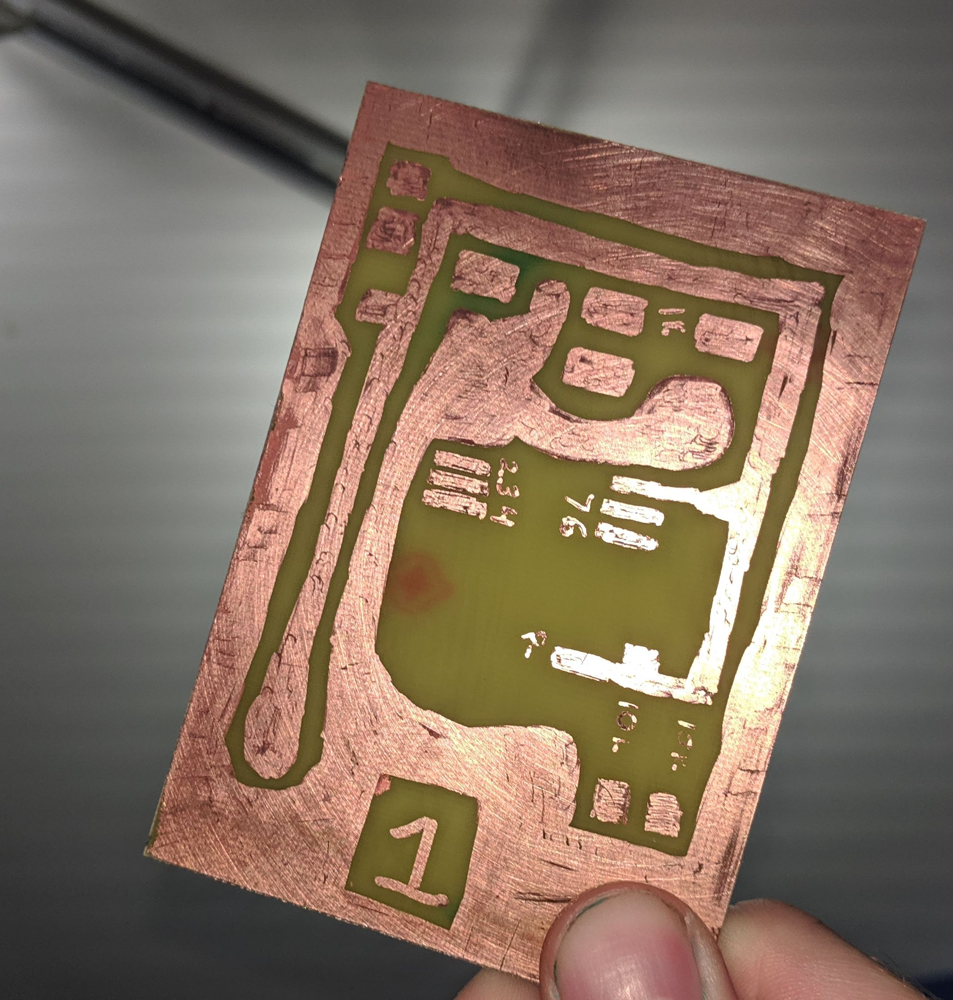
And here, after alcohol and acetone. I could have probably cleaned it enough with alcohol and elbow grease, but I was impatient.
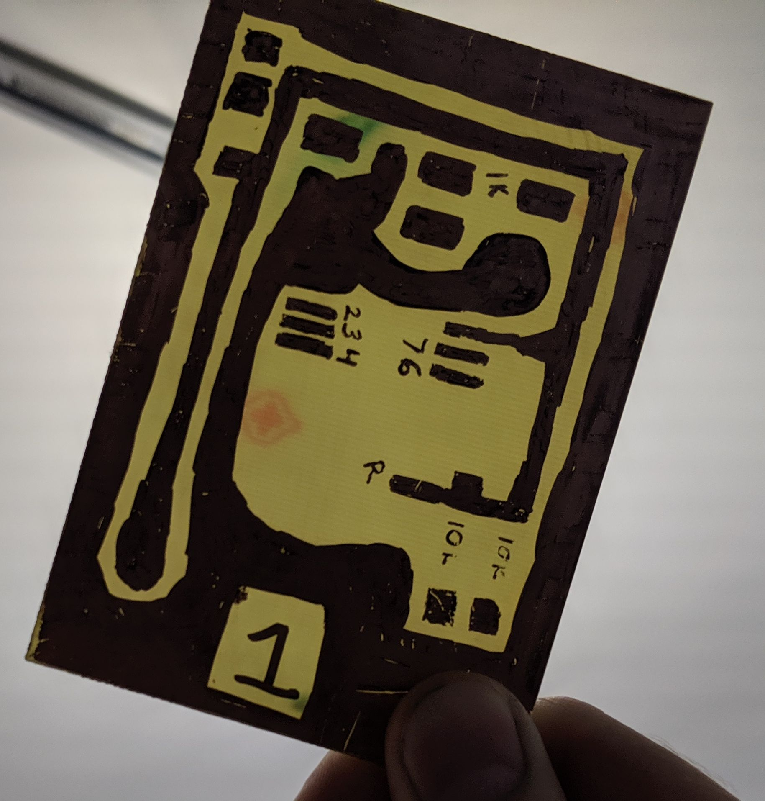
Held up to the light. The solid areas are a bit 'scratchy' but it should be fine. That square pad near the bottom is especially dim, but it should hold a glob of solder. Aside from the 5V trace and the ground plane, everything here is a 'landing pad', basically. Just a place to anchor a component and connect a wire/etc to it.
in no particular order:
I haven't soldered any of these boards yet. Tomorrow I'll probably at least tin all the contact points on board 1 and poke it with a meter to make sure nothing's shorted. Maybe I'll just assemble the whole shebang. There's no solder mask on these boards, obviously, so once they're populated with components I intend to coat all the exposed copper with clear plastidip or something. You can buy legitimate conformal coating for circuits but lmao
random links lmao